Each of the twenty three chapters opens on a page of its own: original art in the book's navy and gold, the chapter's sections with the pages they start on, and its learning objectives. A tab on the outer edge of every page carries the chapter number, one step lower each chapter, so the book falls open where you need it.
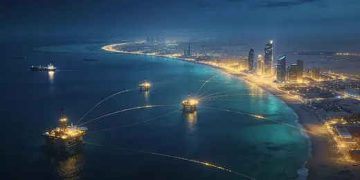
1The Gulf as a Cyber Theatre
2Threat Actors and Landmark Incidents
3National Cybersecurity Governance
4Laws, Regulations, and Standards
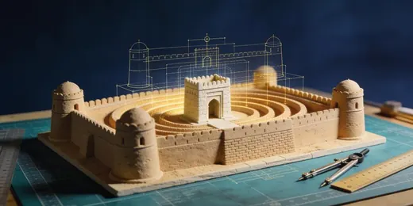
5Principles of Security Engineering and Risk
6Identity, Access and National Digital Identity
7Cryptography and Trust Infrastructure
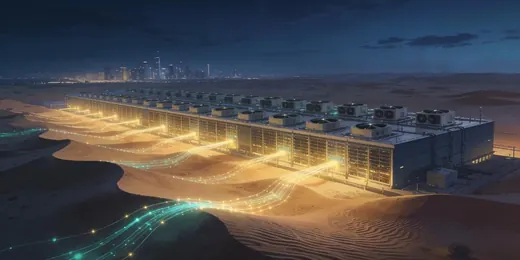
8Network and Cloud Security, Residency and Sovereignty
9Application Security and Open Banking
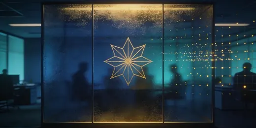
10Data Protection and Privacy Engineering
11Security Architecture in Practice
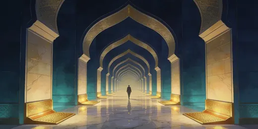
12Zero Trust Architecture
13Post Quantum Migration
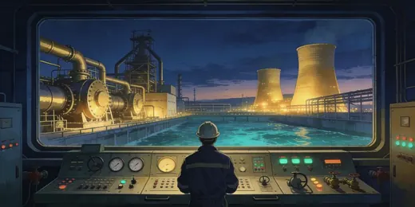
14Critical Infrastructure and Operational Technology
15Telecommunications and Digital Infrastructure
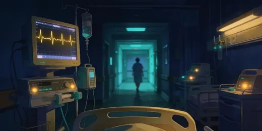
16Healthcare Security
17Financial Services Security
18Government, Smart Cities and Digital Services
19Security Operations, Threat Intelligence and Incident Response
20Offensive Security and Assurance
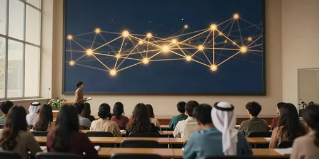
21People, Culture and Workforce
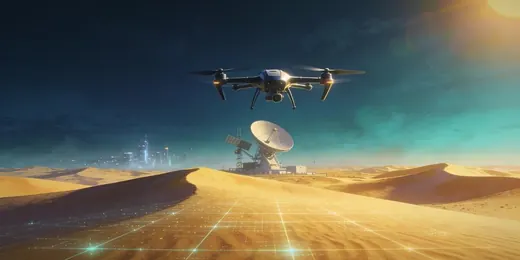
22Emerging Technologies
23Cyber Resilience and National Strategy
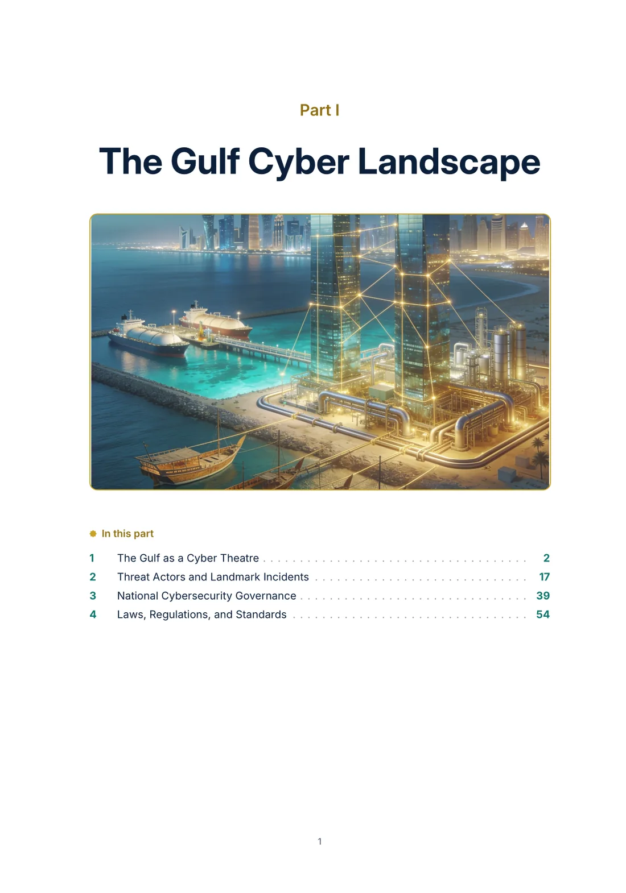
Each part opens with original art and a list of its chapters. This is Part I, The Gulf Cyber Landscape.
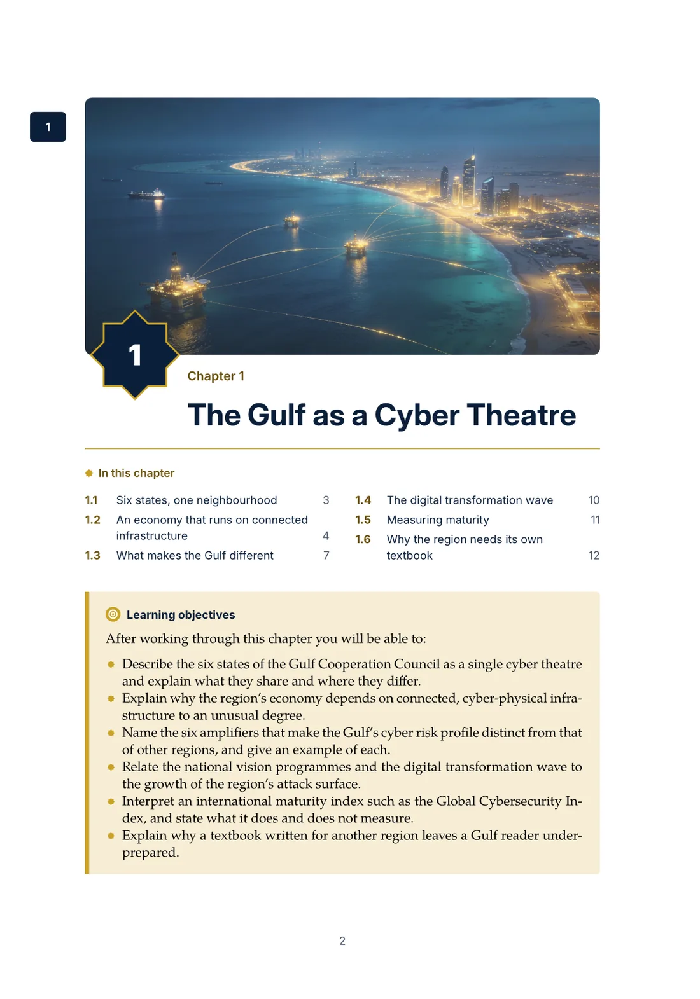
Every chapter opens on its own page with original art, a map of its sections and their pages, and the learning objectives.
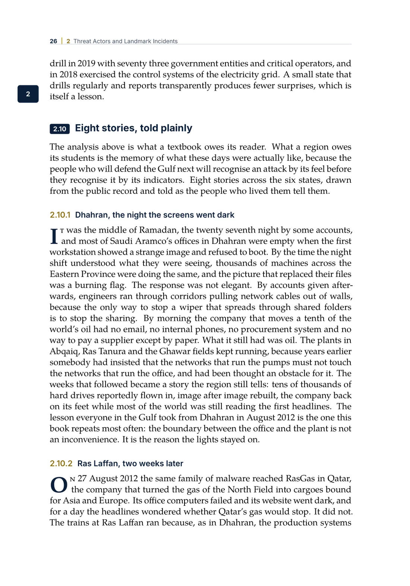
Chapter 2 tells eight regional incidents as stories drawn from the public record, among them Ras Laffan in 2012 and the Saudi plant that stopped itself in 2017.
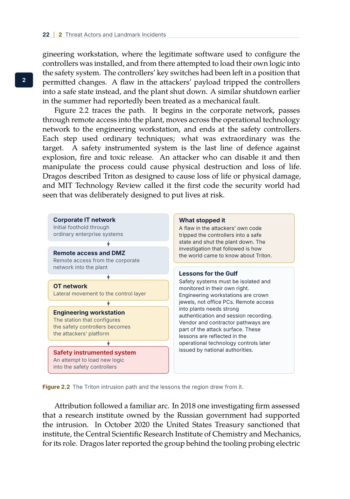
Thirty seven diagrams drawn for the book, like the Triton intrusion path.
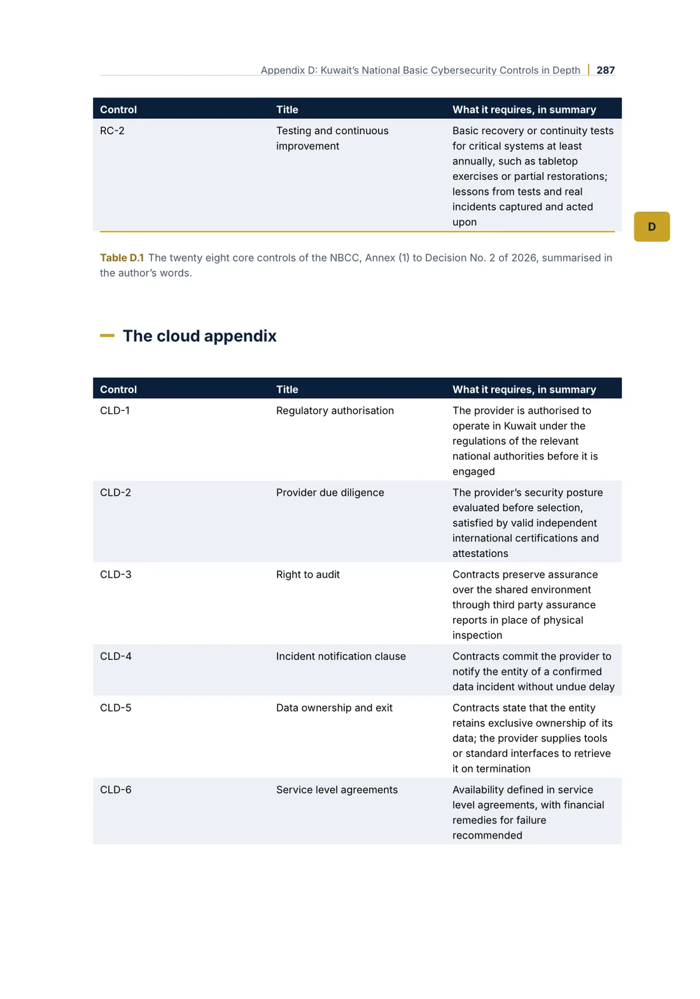
Four national instruments opened control by control. This is Kuwait's NBCC in Appendix D.
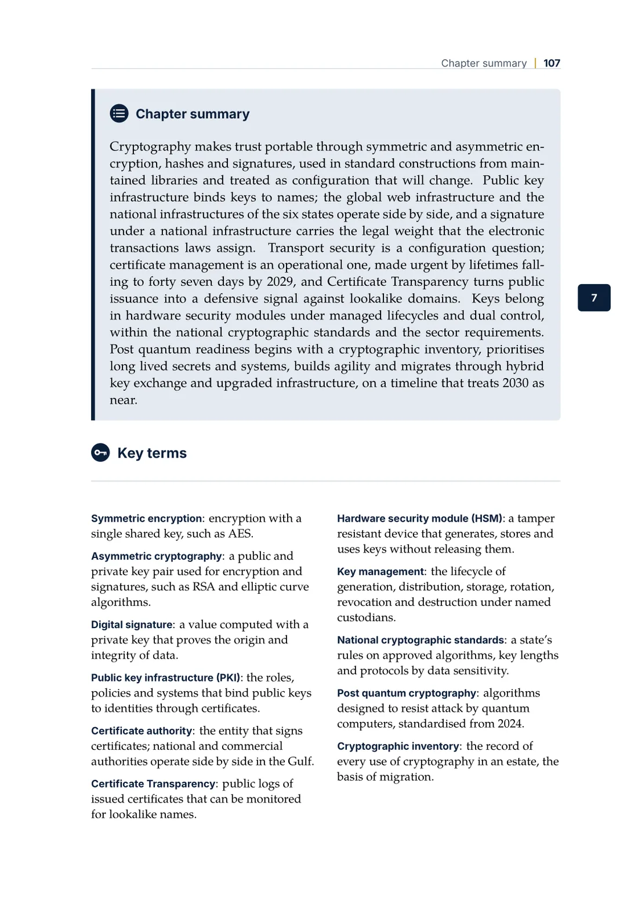
Each chapter closes with a summary, key terms, review questions, exercises and sources.
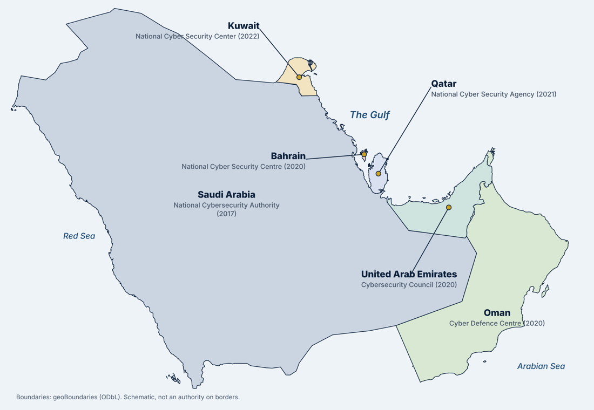
Every chapter covers all six states
Most textbooks treat the Gulf as a footnote. This one treats Bahrain, Kuwait, Oman, Qatar, Saudi Arabia and the United Arab Emirates as one cyber theatre, with their own laws, regulators and incidents in every chapter.
Saudi ArabiaNational Cybersecurity Authority, 2017
United Arab EmiratesCybersecurity Council, 2020
BahrainNational Cyber Security Centre, 2020
OmanCyber Defence Centre, 2020
QatarNational Cyber Security Agency, 2021
KuwaitNational Cyber Security Center, 2022
Four parts, twenty three chapters
From the landscape and the law to the foundations, the sectors and what comes next. Each part opens with its own art in the book.
Part I
The Gulf Cyber Landscape
Chapters 1 to 4
Show the chapters
The Gulf as a Cyber Theatre. Six states, one neighbourhood; the dependency stack of critical infrastructure; the six amplifiers of the region's risk.
Threat Actors and Landmark Incidents. Shamoon, Triton, the Qatar News Agency, the hacktivist era to 2026, ransomware and fraud, told as eight stories.
National Cybersecurity Governance. Three governance archetypes; each state's authority, CERT, strategy and baseline; the GCC structures.
Laws, Regulations, and Standards. The legal stack, cybercrime and data protection laws, national baselines, the crosswalk method and the notification register.
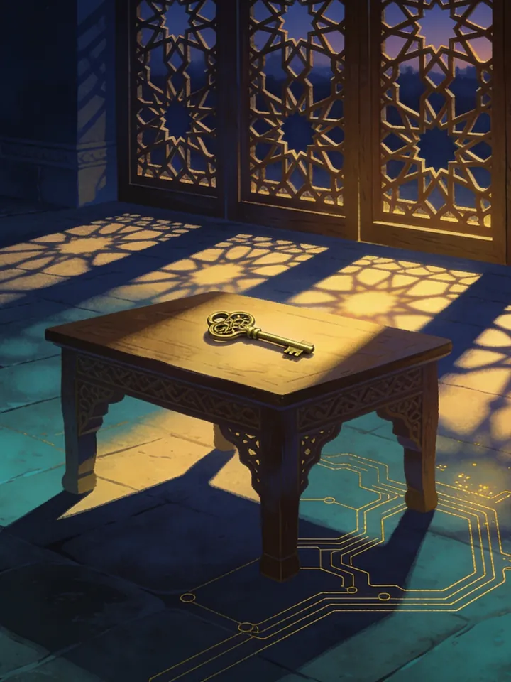
Part II
Foundations with a Regional Lens
Chapters 5 to 13
Show the chapters
Principles of Security Engineering and Risk. Safety and resilience as security properties; threat modelling with a state aligned adversary assumed.
Identity, Access and National Digital Identity. The six national identity platforms, a high turnover workforce and the fraud that targets both.
Cryptography and Trust Infrastructure. National PKIs, certificate lifetimes, Certificate Transparency, HSMs and national cryptographic standards.
Network and Cloud Security, Residency and Sovereignty. The Gulf's cloud regions and classification driven architecture under the residency rules.
Application Security and Open Banking. The secure development lifecycle at the vendor boundary and the open banking regimes of the six states.
Data Protection and Privacy Engineering. From the laws' principles to engineering requirements, with a cross border transfer method.
Security Architecture in Practice. The review path with three artefacts and three gates, reference architectures and vendor assessment.
Zero Trust Architecture. What zero trust is and is not, and a programme sequenced by consequence for a Gulf organisation.
Post Quantum Migration. The 2030 and 2035 timelines, the cryptographic bill of materials and migration layer by layer.
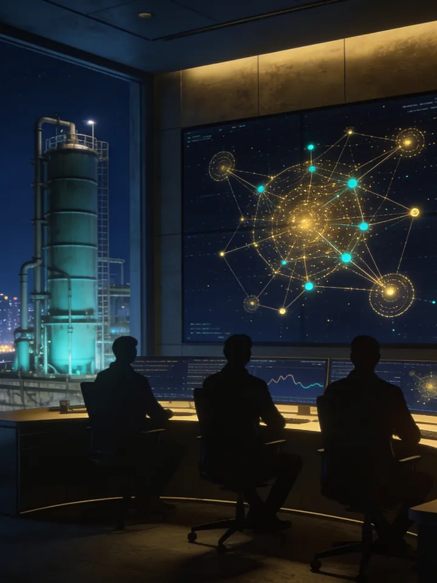
Part III
Sectors and Operations
Chapters 14 to 21
Show the chapters
Critical Infrastructure and Operational Technology. The plants of the six states, IEC 62443 and the regional controls, incident response and cyber ranges.
Telecommunications and Digital Infrastructure. Submarine cables and the Red Sea chokepoint, signalling abuse, fake base stations and SIM swap.
Healthcare Security. National health platforms, the hospital as a cyber-physical estate and the Kuwait Ministry of Health case.
Financial Services Security. Central banks, payment infrastructures, SWIFT, cards, instant payments and fraud as a social attack.
Government, Smart Cities and Digital Services. Digital government platforms, secure by design, events and trust in official channels.
Security Operations, Threat Intelligence and Incident Response. Operations against the regional threat model, brand protection and the incident lifecycle.
Offensive Security and Assurance. The legal frame for testing in the six states and the assurance ladder up to intelligence led red teaming.
People, Culture and Workforce. Awareness that changes behaviour, insider risk, national talent programmes and leading security.
Part IV
Horizons
Chapters 22 and 23
Show the chapters
Emerging Technologies. Artificial intelligence on both sides, quantum in context, 5G and the Internet of things, space and navigation.
Cyber Resilience and National Strategy. From compliance to resilience, the six national strategies compared and the road ahead.
Then twelve appendices: a regulatory quick reference for all six states, a fourteen week course map, the open source companions, four instruments in depth, a chronology from 1981 to 2026, acronyms, a research agenda for the region's universities and the notification clocks the instruments state in numbers. A glossary and an index close the book.
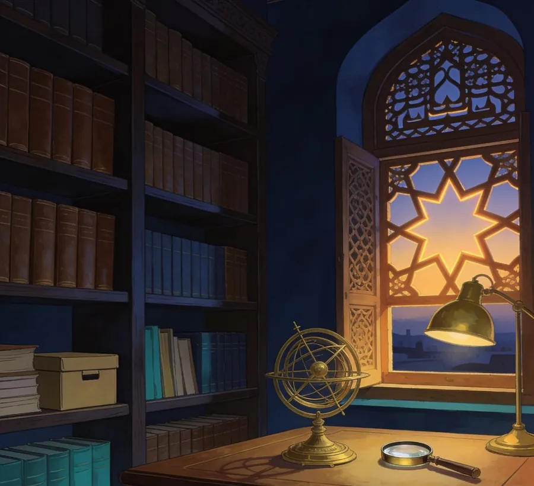
The appendices open with their own art.
Four instruments, opened control by control
The appendices take the region's most demanding instruments apart, with crosswalks to ISO/IEC 27001, NIST CSF 2.0, PCI DSS and SWIFT where they apply.
Kuwait, Appendix D
National Basic Cybersecurity Controls
Decision No. 2 of 2026: all 44 controls, the eighteen month window to 5 October 2027, a roadmap in six phases and the evidence pack.
Saudi Arabia, Appendix E
Essential Cybersecurity Controls, ECC-2:2024
Four domains, 28 subdomains and 108 main controls, what changed in the second edition and the requirements assessors check first.
Central Bank of Kuwait, Appendix F
Cyber and Operational Resilience Framework
Three baselines and 876 controls, every domain and subdomain with its count, and how to evidence it at the control area.
Qatar, Appendix G
National Information Assurance Standard
Version 2.1: 26 domains, 356 controls, the 166 in the mandatory baseline and the two hour incident clock.
UAE, Bahrain and Oman, Appendix K
The other three national models
The UAE Information Assurance Regulation and the instruments of Bahrain's and Oman's national centres.
Eight stories, told plainly
The region's memory of its own incidents, drawn from the public record, with each detail traced to the sources at the end of the chapter.
Dhahran, the day the screens went dark
Saudi Arabia, 2012
Late in Ramadan a wiper disabled about thirty thousand of Saudi Aramco's office computers, and production continued because, the company said, its control systems were isolated.
Ras Laffan, two weeks later
Qatar, 2012
A virus shut down part of RasGas's computer system, affecting its office desktops; the company said production and cargoes were unaffected.
Saudi Arabia, the plant that stopped itself
Saudi Arabia, 2017
Attackers reached a petrochemical plant's safety controllers, and a mistake in their own code tripped the plant into a safe shutdown.
Doha, after midnight
Qatar, 2017
Fabricated statements on the national news agency's website, and the lesson that publishing systems are national infrastructure.
Kuwait, two Septembers
Kuwait, 2023 and 2024
Ransomware at the Ministry of Finance in 2023, then a health ministry outage that the ministry later linked to attempts to breach its systems.
Manama, a summer of pressure
Bahrain, 2019
Intrusions reported at the electricity and water authority and at government bodies, and a national cyber security centre created the following year.
The Emirates, a hundred hours
United Arab Emirates, 2024
A six day denial of service campaign against a bank, which its protection provider said caused no disruption.
Muscat, preparing in public
Oman, 2018 and 2019
An audit of the power companies' control systems, a national drill with seventy three entities, and national figures published in the open.
Written for three readers
Lecturers and students
Objectives, a summary, key terms, review questions, exercises and sources in every chapter.
A fourteen week course map with learning outcomes.
For lecturers who adopt the book: a question bank with answers and a lecture deck for every chapter, on request.
Officials and regulators
Every national authority, instrument and cooperation structure, side by side.
A regulatory quick reference for all six states.
The six national strategies compared, written to be cited in briefings.
Practitioners
The crosswalk method to meet several instruments with one programme.
A notification register and the clocks the instruments state in numbers.
Reference architectures, a review path and vendor assessment that stand up to a regulator.
Open tools for the exercises
The exercises use open source tools built in the region. They are free on GitHub, and the book shows how to use them.
Najjab, who must be notified and by when after an incident, across the six states and three free zones.
Sadu, a register for the Central Bank of Kuwait's resilience framework with a crosswalk to international standards.
Kuwait NBCC Toolkit, a compliance tool for the 2026 national baseline controls.
Dir' and Mirqab, cyber ranges modelling a desalination plant and an LNG plant.
KWTCyberWatch and QACyberWatch, phishing detection and brand protection from Certificate Transparency logs.
Ali AlEnezi is a senior security architect in Kuwait. He leads security architecture at the largest financial institution in the country, chairs the Cyber Risk and Security Committee serving Kuwait and the Gulf, served on the board of one of the largest information technology companies in Kuwait, and maintains a portfolio of open source security tools for the region. Several of the tools are used in the book's exercises.
Questions
Which edition should I buy?
The paperback is a large format reference to keep on the desk and mark up, with an index and every diagram at print size. The Kindle edition is searchable, travels with you, and carries every diagram with a written description for screen readers.
Does it cover my country?
Yes. Every chapter covers Bahrain, Kuwait, Oman, Qatar, Saudi Arabia and the United Arab Emirates, and the appendices open the national instruments of all six.
How current is it?
It describes the laws, regulations and frameworks as published in 2026, including Kuwait's 2026 baseline controls, the Central Bank of Kuwait's framework of December 2025 and Saudi Arabia's ECC-2:2024. Changes and corrections are listed in the errata in the companion repository.
I teach a course. What is there for me?
The book maps to a fourteen week course, and the course map is in the companion repository. Lecturers who adopt the book can request a question bank with answers and a lecture deck for every chapter by opening an issue in the repository with their institution and course.
Is the text available anywhere for free?
No. The book is sold on Amazon. This site and the companion repository carry the course map, templates, errata and tool links, not the text.
Get the book
Paperback and Kindle editions are on sale now on Amazon.